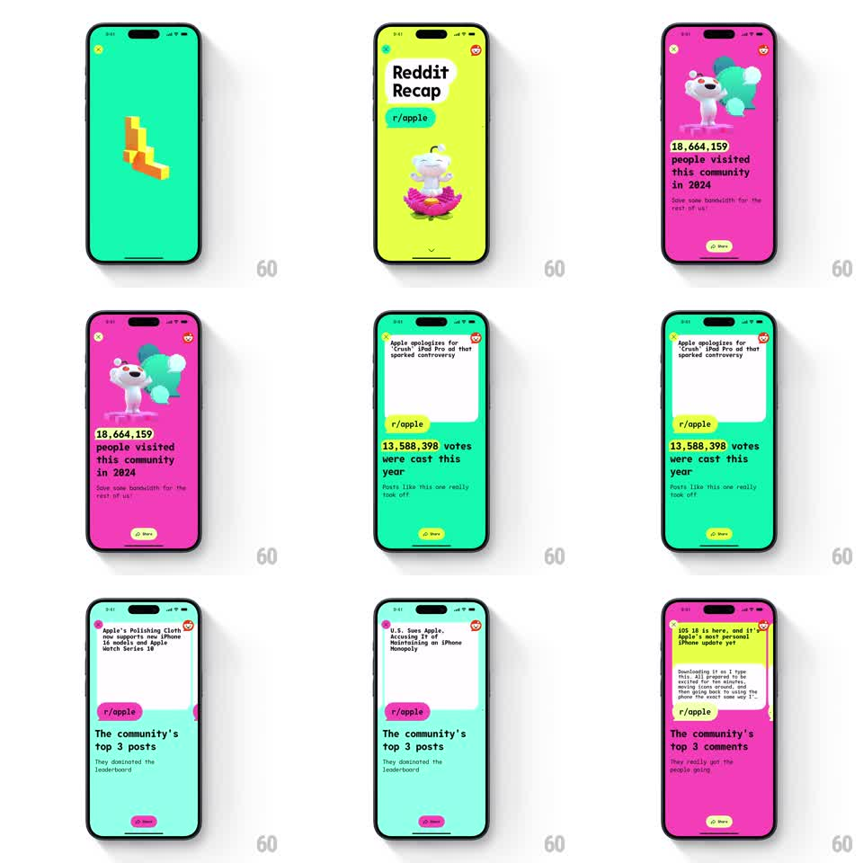

Media
Frame-by-frame

Rebuild this interaction 1:1: Reddit Recap's story flow - a vertical chapter stack of full-screen stat cards on shifting neon backgrounds, each with an animated 3D Snoo mascot, a big number, and a Share button, with horizontal swipes paging through post cards inside a chapter.

Rebuild this interaction 1:1: Reddit Recap's story flow - a vertical chapter stack of full-screen stat cards on shifting neon backgrounds, each with an animated 3D Snoo mascot, a big number, and a Share button, with horizontal swipes paging through post cards inside a chapter.
## Integration
Integration: stack-agnostic spec - springs given as stiffness/damping, timed motions as duration + curve; map every value to your framework and animation library of choice.
## Scene
Full-screen story cards for r/apple: a green title card ("Reddit Recap", Snoo meditating on a pink lotus), then a magenta chapter (Snoo floating with hearts, "18,664,159 people visited this community in 2024"), a green votes chapter ("13,588,398 votes were cast this year" under a real post card), and "The community's top 3 posts / top 3 comments" chapters with horizontally swipeable post cards. A close X sits top left, a share icon top right, and a Share pill pins the bottom.
## Motion spec
Pattern: vertical story chapters with horizontal card paging, gesture-driven.
- Vertical swipes move between chapters: the incoming card slides up over the outgoing one (spring stiffness 280 damping 26), background color crossfading to the chapter's neon.
- The chapter's number counts up on entry (1s, ease-out) while the Snoo mascot animates in (scale from 0.7, spring stiffness 260 damping 16, with a gentle idle float afterward, plus/minus 6px, 2.5s period).
- Within a chapter, horizontal swipes page through the post cards (1:1 tracking, snap spring stiffness 320 damping 26), cards rotating slightly (2 degrees) as they travel.
- Body copy lines fade in staggered (80ms apart, 300ms each) after the number lands.
- The Share pill and close controls stay fixed across chapters.
## Calibration
- Each chapter owns one saturated background color (green, magenta, lime) - the color change is the chapter change.
- The number is always the hero: largest type on screen, bold, tight.
## Reduced motion
Chapters and cards crossfade; numbers appear final.
## Don't miss
- The Snoo mascot differs per chapter (lotus pose, hearts float) and always idles after entering.
- Post cards are real content mocks with titles and vote counts, not grey boxes.